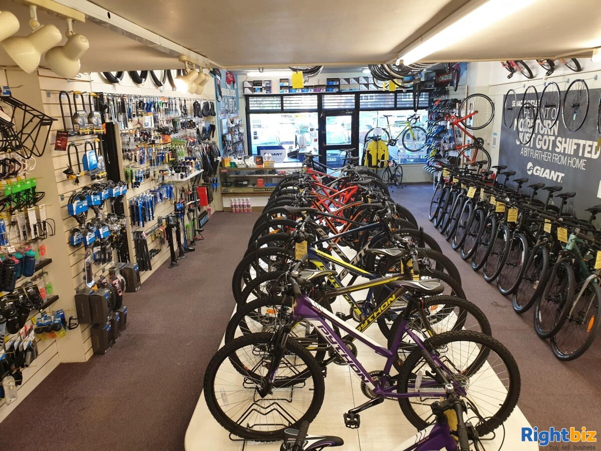

In this project we clean, standardize and analyze the data using the SQL server. The goal of this analysis is to give a general outlook of the staff employed by this company. And in order to achieve this, we shall make use of fields like gender,age, race/ethnicity,location of the workplace and department. We will also go ahead and look at the turnover and staff retention rate of the company which will in turn give us an overview of how the number of staff has changed overtime.

For this project, we use SQL to clean ,standardize and prepare the data for analysis. The goal of this project is to find out how walmart is performing at each of their 3 branches in terms of total revenue generated as well as the quantities of goods sold. We also need to provide an insight on fields like payment type, customer type and the customer ratings.
This project makes use of SQL for analysis of covid data. The purpose of this project is to find out the infection and death rate of Covid-19. We also look at the cases, deaths as well as vaccinations worldwide as well as individual countries.

For this bike sales project, we use Micrsoft Excel to clean ,standardize and analyze the data. The purpose of this project to give a general outlook of the demographics of the buyers to better understand the target market, as well as to identitify which groups are more likely to make purchases depending on fields like age, gender, marital status among others. We then go ahead to create an interactive dashboard to visualize our data.
The coffee sales project is done using Microsoft Excel. The analysis begins with cleaning and standardizing the data after which analysis is done by making use of pivot tables. A dashboard is then created for visualization. The goal of this project is to know the perfomance of each country in terms of sales made and also determine the change in sales of the different coffee types over time.
View Project

Visualization of Human Resource(HR) data.

Visualization of Walmart sales data.